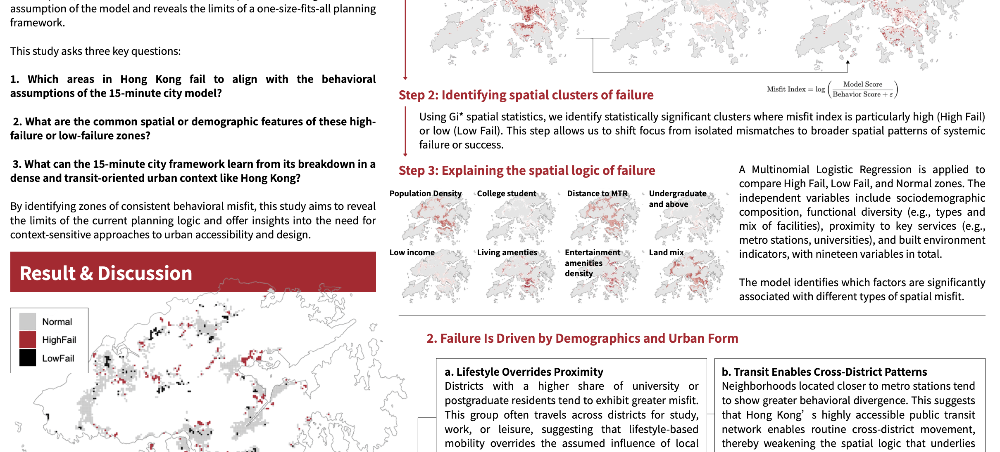

Research project
When 15-Minute Cities Fail: Diagnosing Spatial Misfit in High-Density Urban Contexts
Using hourly GPS origin–destination data, grid-based accessibility indicators, and spatial statistics, this project shows that proximity does not guarantee use in a high-density, transit-oriented city. It diagnoses where and why theoretical walking catchments fail to explain everyday mobility.
GPS OD data
Isochrones
Grid indicators
Spatial analysis
Multinomial logit